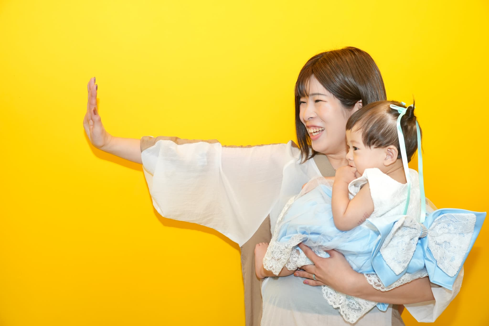
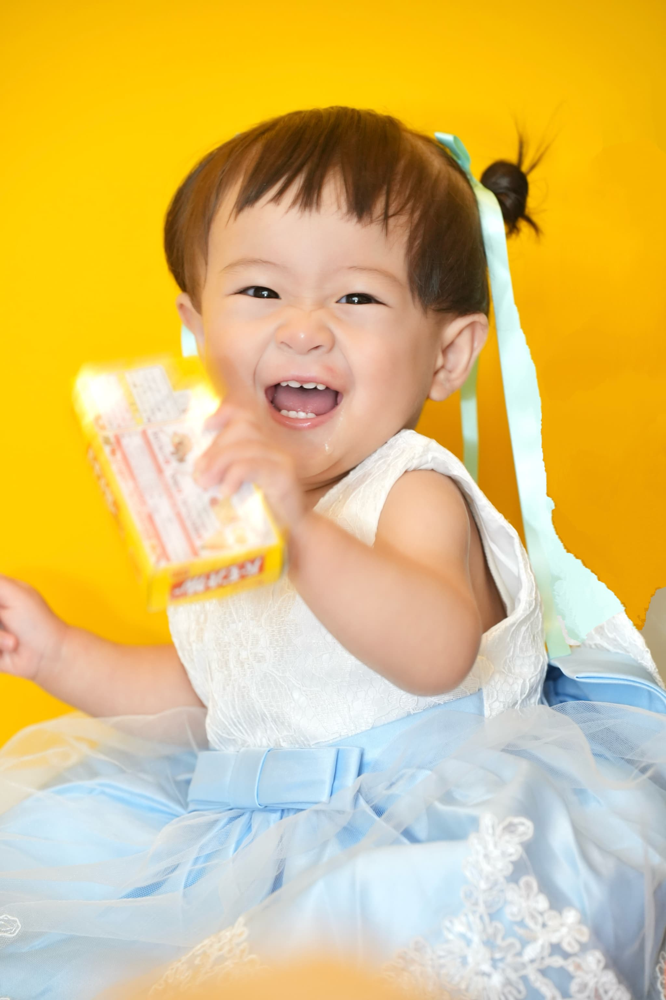
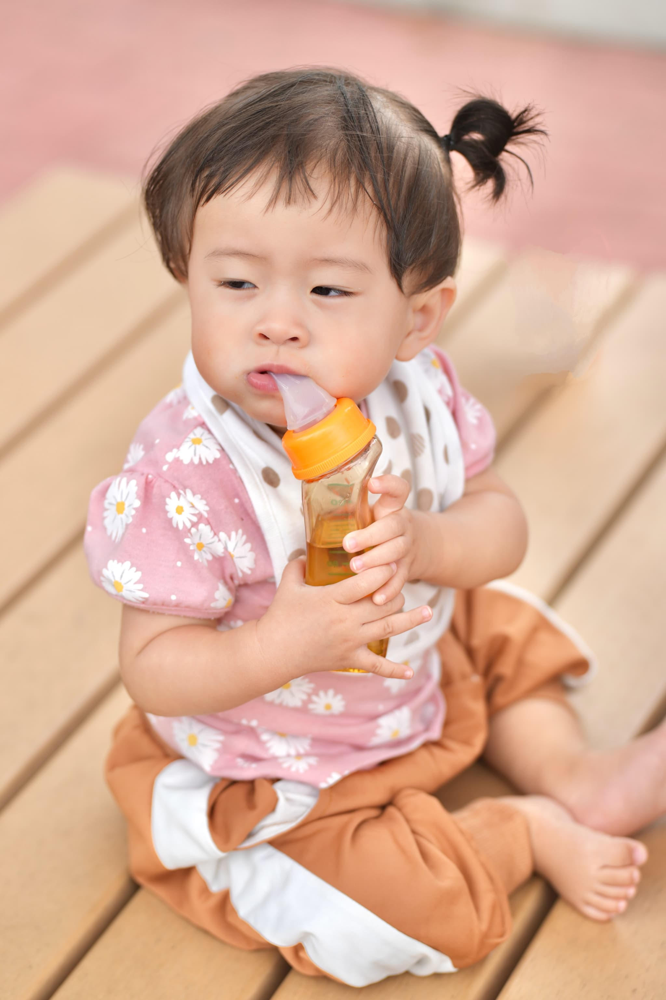
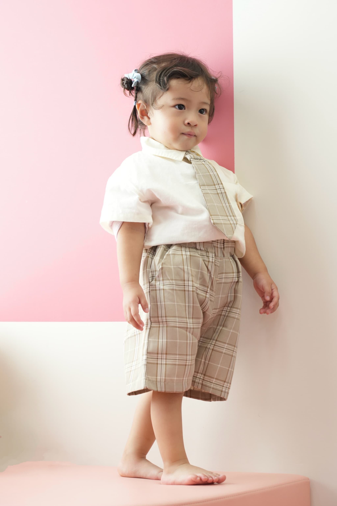
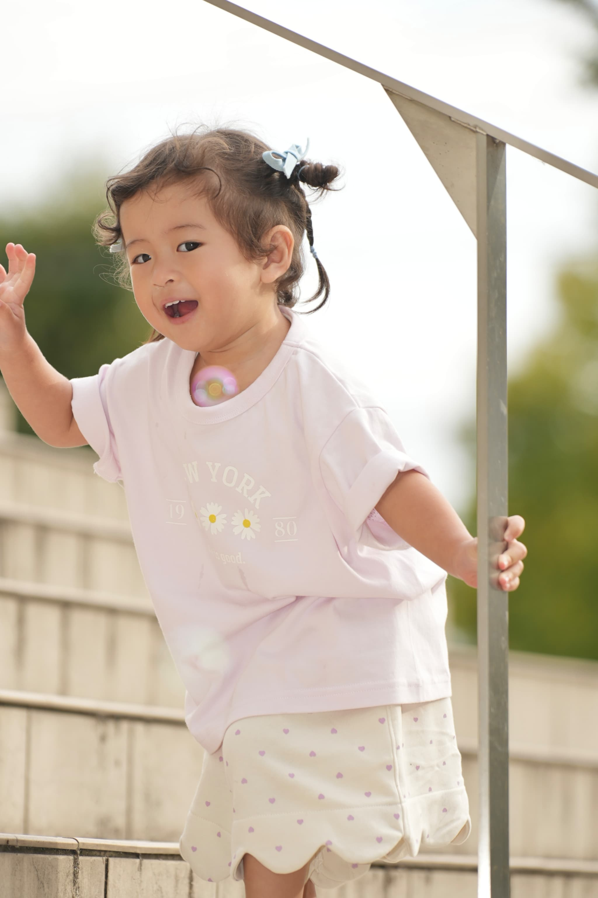
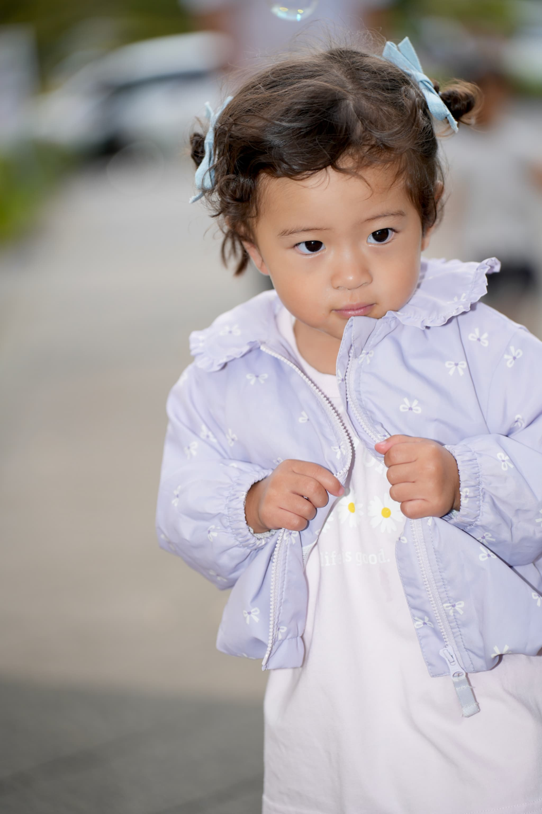

#バースデーフォト #親子撮影
Annual Birthday Session: 1st & 2nd
2025.10.13
「雨天でも安心な室内パーク」と「開放感のある公園ロケ」を組み合わせ、お子様の成長と個性に合わせた最適な撮影プランをご提案
1st Birthday - Park Portrait
1歳時は公園での親子ポートレートを中心に




2nd Birthday - Active Play
2歳時は「コトエ流山おおたかの森」内のピュアキッズも交え、よりアクティブなソロショットを撮影





毎年、同じご家族の成長を記録させていただけることは、カメラマンとしてこの上ない喜びです。
また来年、お会いできるのを楽しみにしています。